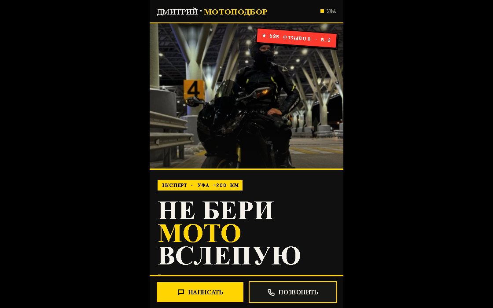

Сайт эксперта · 2026
Мотоподбор Дмитрия
Из объявления на Авито — в сайт с чек-листом осмотра мотоцикла.

Задача
Показать покупателю, что именно Дмитрий проверяет перед покупкой мотоцикла. Исходным материалом было объявление на Авито.
Что я сделал
Разложил информацию из объявления по этапам работы. Вынес в чек-лист проверку двигателя, документов и истории мотоцикла.
Результат
До обращения к Дмитрию покупатель может посмотреть, что входит в выездной осмотр и как проходит сопровождение сделки.